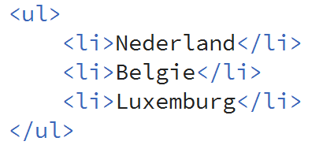

De body
Tussen <body> & </body> plaats je alle tekst en afbeeldingen die op jouw webpagina zichtbaar zijn. Dit wordt ook wel de content genoemd. Met een tag geef je aan wat voor soort content het is. Hieronder zie je een overzicht van de meest voorkomende tags.
| Tags: | Werking: |
| <p>…</p> | Dit is een paragraaf. |
|
<h1>…</h1> <h2>…</h2> <h6>…</h6> |
Dit is een kop. Hoe lager het getal, hoe groter de kop. H1 is dus de grootste, H6 de kleinste. |
| <br> | De <br> tag moet je zien als de enter toets in html. |
| <hr> | Met <hr> horizontale lijn op je webpagina |
| <img> | Hiermee voeg je een afbeelding toe. |
| <a>…</a> | Hiermee maak je een verwijzing / hyperlink. |
| <table>…</table> | Dit is het begin van een tabel |
| <tr>…</tr> | Dit is een tabelrij |
| <td>…</td> | Dit is een cel in een tabelrij |
| <!-- … --> | Dit is een commentaar regel. Deze zal je nooit op je webpagina terug zien. Enkel in je Dreamweaver. |
| <ul>…</ul> | Ongeordende lijst |
| <ol>…</ol> | Geordende lijst |
| <li>…</li> | Optie in een lijst. |
| <span>…<span> | Een tag zonder eigenschappen. Hier kun je een CSS classe aan koppelen. |
We gaan met deze tags is oefenen om te kijken wat ze nou precies doen.
| Opdracht 1: Je eerstse script! |
|
Open in Dreamweaver een nieuw leeg HTML bestand.
|
Als je opdracht3-1.html nu opent in je webbrowser (het bestand opzoeken op je harde schijf en dubbel klikken) zie je dat elke tag andere eigenschappen heeft. Het is belangrijk om deze eigenschappen te weten. Hieronder volgt een overzicht van de tags die in de vorige opdracht behandeld zijn en wat de eigenschappen hier van zijn.
| Tags: | Eigenschap: |
| <p>…</p> | Voegt een lege regel voor en na de tag toe. |
|
<h1>…</h1> <h2>…</h2> <h6>…</h6> |
Voegt een lege regel voor en na de tag toe. Tekst is vetgedrukt en grootte 20. Voegt een lege regel voor en na de tag toe. Tekst is vetgedrukt en grootte 18. Voegt een lege regel voor en na de tag toe. Tekst is vetgedrukt en grootte 10 |
| <br> | Enkel een enter. |
| <hr> | Zet op een nieuwe regel pas de horizontale lijn. |
| <!-- … --> | De kleur in de code wordt grijs, in je webbrowser zie je hier niets van terug. |
| Opdracht 2: Code oefenen |
|
Open in Dreamweaver een nieuw leeg HTML bestand.
|
| Voorbeeld 3-1 |
|
<!doctype html> <body> <!-- dit is een script met fouten --> |
| Opdracht 3: Fouten zoeken |
|
Open in je editor een nieuw, leeg HTML bestand.
|
Opsommingslijst
In HTML kun je door gebruik te maken van twee tags een opsomminglijst creëren. Als je een Ongeordende lijst wilt maken, gebruik je de tag <ul>. Dit staat voor Unordered list. Wil je een geordende lijst maken, dan gebruik je <ol>. Wat staat voor een Ordered list. Je kunt de opsommingtekens op verschillende manieren weergeven. Je moet dan een zo gehete type opgeven.
Als je dit gedaan hebt gebruik je de <li> tag om een optie toe te voegen.
| Tags: | Eigenschap: |
| <ul>…</ul> | Ongeordende lijst |
| <ol>…</ol> | Gewone cijfers |
| <ol type=”i”>…</ol> | Kleine Romeinse tekens |
| <ol type=”I”>…</ol> | Grote Romeinse tekens. |
| <ol type=”a”>…</ol> | Kleine letters |
| <ol type=”A”>…</ol> | Hoofdletters |
Een voorbeeld van een lijst zie je hieronder:
| Let op: |
| Om je code overzichtelijk te houden is het aan te raden om voor elke <li> een tab toe te voegen. |
| Opdracht 4: Opsommingslijst |
|
Open in Dreamweaver een nieuw leeg HTML bestand.
|